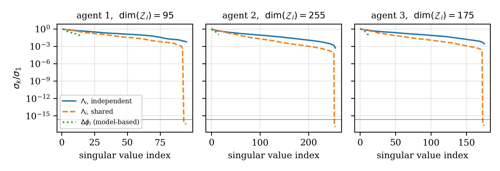
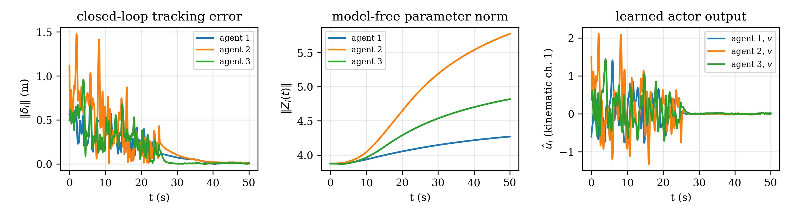

The full 50-s experiment at a glance: three wheeled mobile robots learn, online, to track a
serpentine virtual leader over a fixed communication graph — converging to a rigid formation
under Itô process noise and worst-case disturbances.
Overview
A genuinely stochastic $H_\infty$ formation-tracking game, solved online.
In this paper a distributed stochastic $H_\infty$ optimal tracking control problem for multi-agent
wheeled mobile robot systems is proposed, under both Itô process noise in the agent dynamics and
worst-case external disturbances. By reformulating the control task as a stochastic zero-sum game
problem, a decentralized framework is established wherein each agent interacts locally with its
neighbors and is influenced by disturbances. The solution involves a set of coupled stochastic
Hamilton–Jacobi–Isaacs equations, which gain a genuine Itô-correction term over their
deterministic counterpart and reduce to them exactly as the noise intensity vanishes. To derive an
approximate optimal policy, a critic-only neural network scheme is developed, in which each agent's
policy is obtained in closed form from the critic gradient rather than from a separately tuned actor.
A historical data-based update law is employed to eliminate the need for persistence of excitation,
thereby enhancing online learning efficiency. Furthermore, the learning law requires no knowledge of
the drift dynamics of the augmented system; an off-policy reformulation, which augments the critic with
actor and cross-channel parameters, additionally removes the dependence on the input and diffusion
channels, so that the entire learning problem is solved from data. The auxiliary feedforward term that
cancels the nominal consensus coupling remains model-based and is treated as part of the given
formation architecture rather than as part of the learned policy. Simulation results are presented to
demonstrate the effectiveness and real-time capability of the proposed method.
Genuinely Stochastic $H_\infty$ Game
Each agent's dynamics are modeled as an Itô SDE, not an ODE. The coupled HJI equations gain a
genuine Itô-correction term absent from deterministic formulations, reducing to them exactly as
the diffusion intensity vanishes.
Critic-Only Online IRL
A single critic network per agent — the policy and the worst-case disturbance follow in closed
form from the critic gradient, with no separately tuned actor. A historical-data (experience-replay)
adaptive law, re-derived via Itô's formula, relaxes the persistence-of-excitation requirement
while preserving stability during learning.
Model-Free Learning
An off-policy reformulation lumps the unknown input/diffusion channels into the agents' own policies,
augmenting the critic with actor and cross-channel parameters. No drift, input-channel, or diffusion
knowledge enters the Bellman equation, the regressor or the adaptive law — a change of regressor,
not of algorithm. The auxiliary feedforward that cancels the nominal consensus coupling stays
model-based and belongs to the formation architecture, not to the learned policy.
Mean-Square UUB Guarantee
Tracking and critic-weight errors are proven ultimately uniformly bounded in the mean-square sense,
with an explicit noise-dependent bound that recovers the deterministic pathwise result as
$\Sigma_i \to 0$.
A MuJoCo visualization of the paper's exact experiment (Sec. Results): the virtual leader (gold beacon)
traces the serpentine reference while three follower WMRs, running the online IRL / $H_\infty$
critic-actor law with the paper's communication graph, self-assemble into the learned rigid formation.
The coloured curves are the resulting 2D trajectories; the white links show the live
communication-graph edges converging to a fixed shape.
Method
Coupled stochastic HJI equations, solved with critic-only IRL.
We cast distributed formation tracking as a stochastic zero-sum game and solve the resulting coupled
stochastic HJI equations online with a critic-only integral reinforcement learning (IRL) scheme.
Historical data replace persistence-of-excitation requirements, and the controller does not need the
drift dynamics of the augmented multi-agent system.
SIRL overview.
(a) Per-agent control loop: the neighbourhood error feeds a critic network whose IRL Bellman residual
and replayed history drive the weight-adaptive law (eq. 35); the resulting critic weights
parameterise the $H_\infty$ policy and worst-case disturbance, which act on the WMR and close the loop
through the measured state and the communication graph.
(b) The critic's quadratic bases $\varphi_i(\delta_i)$ and their finite differences $\Delta\varphi_i(t)$
are recorded into a rank-$L$ history stack $Z_i$, which replaces the persistence-of-excitation
requirement with a verifiable, data-driven condition.
(c) The model-free extension separates behaviour signals $u_j=\hat u_j+e_j$ from the target policy,
lumping the unknown drift/input/diffusion terms into $\mathcal{Z}_i$ so the resulting residual
$\Psi_i^{\mathrm{mf}}$ is a drop-in replacement inside the same adaptive law (eq. 35).
Theorem 1 (Mean-Square UUB)
Under the proposed adaptive law (eq. 35) and the history-stack rank condition — and no further
hypothesis on the closed loop — the closed-loop
tracking error $\delta_i$ and the critic weight error $\tilde W_i$ are ultimately uniformly bounded
in the mean-square sense, with an ultimate bound that reduces exactly to the deterministic
pathwise UUB result as the diffusion intensity $\Sigma_i \to 0$. The approximated value function,
control policy, and worst-case disturbance all converge to their optimal Nash-equilibrium counterparts
in mean square: $\mathbb{E}\|V_i^* - \hat V_i\|^2 < \epsilon_{V_i}$,
$\mathbb{E}\|u_i^* - \hat u_i\|^2 < \epsilon_{u_i}$, $\mathbb{E}\|\vartheta_i^* - \hat\vartheta_i\|^2 <
\epsilon_{\vartheta_i}$.
Communication topologyDisturbance rejection performance
Results
Accurate formation tracking under noise and adversarial disturbances.
The proposed SIRL controller achieves accurate formation tracking for wheeled mobile robots under
process noise and adversarial disturbances. Position and orientation errors converge, while critic
network weights remain bounded during online learning.
Estimated worst-case disturbance policy $\hat\vartheta_i$, dynamic-channel component.
Left: full horizon, dominated by the exploration signal over $[0,5]\,$s. Right: the settled
post-excitation behaviour.
Online Critic Learning
Critic weights converge online — no persistence of excitation required.
Critic neural-network weights converge online using historical data, without requiring persistence of
excitation. Ablation studies quantify the contribution of the reinforcement learning component.
Critic weights $W_1$Critic weights $W_2$Critic weights $W_3$Ablation: contribution of the RL component
Disabling each component in turn, with topology, reference, noise realisation, and seed held fixed
(mean position-error norm $\bar{\|\delta\|}$ over $t>25\,$s; cost
$J=\sum_i\int_5^{50}(e_i^TQ_ie_i+u_i^{rT}R_{ii}u_i^r)\,dt$):
Variant
Cost $J$
$\bar{\|\delta\|}$ (m)
Proposed (full)
4.38
0.026
Without Bellman-residual / replay terms
4.49
0.025
Without stabilizing term $\xi_i\Theta_i$
diverges
—
Critic weights frozen at $\hat W_i(0)$
diverges
—
Without learned policy $u_i^r$
$1.5\times10^{8}$
14.11
The model-based feedforward alone cannot stabilise the formation (error grows past 14 m without the
learned policy); the stabilizing term is what keeps the closed loop out of the divergent region; and the
Bellman-residual / experience-replay terms lower the cost by a further $\sim$2.4% at equal tracking
accuracy.
Side-by-side on the same simplified visualization plant as the video above: the full critic-only IRL
method (left) versus the fixed model-based feedforward alone, with the learned policy $u_i^r$ switched
off (right) — same leader path, same cameras, same zoom. Because this lightweight kinematic demo
plant already includes the safety modifications (weight leakage, action/weight caps) needed to keep
the full method numerically well-behaved, none of the paper's three ablations reproduces the
outright divergence reported for the real backstepping-cascade plant in Sec. Results; what is visible
here is the honest, milder version of the same effect — a looser, laggier formation without the
learned policy, versus a tight, fast lock-in with it.
Model-Free Extension
The same algorithm, run with no model at all.
The off-policy reformulation replaces the critic regressor with an enlarged one carrying actor and
cross-channel parameters, leaving the learning mechanism — residual, history stack, adaptive law
— untouched. Reading the stationarity conditions backwards lumps the unknown products
$\nabla V_i^Tg_i$ and $\nabla V_i^Tk_i$ into the agent's own policies, weighted by the design matrices
$R_{ii},T_{ii}$; the graphical-game cross terms $\nabla V_i^Tg_j$, which admit no such identity, are
identified from data alongside the critic weights.

The rank condition is attainable — but demands independent excitation.
Normalised singular-value spectra of the model-free regressor $\Lambda_i$ for the three agents
($\dim(\mathcal{Z}_i)=95,255,175$), against the 15-dimensional model-based regressor
$\Delta\phi_i$. Solid: independent exploration on every input channel, for which
$\mathrm{rank}(\Lambda_i)=\dim(\mathcal{Z}_i)$ exactly. Dashed: probing the disturbance channel
with a scaled copy of the control probe — a natural shortcut — collapses the spectrum
to machine precision in three directions per agent and the rank condition fails, no matter how
long the run. Dotted: the model-based regressor on the same data, two orders of magnitude better
conditioned — the price of removing $g_i,k_i$.

Online closed-loop run with $f_{ei},g_i,k_i,\Sigma_i$ all unknown.
Left: formation tracking error; exploration is withdrawn at $25\,$s, after which the error settles
to the centimetre scale. Centre: norm of the enlarged parameter $\mathcal{Z}_i$, which grows most
for agent 2, the agent coupled to both neighbours; it has not plateaued by $50\,$s — the
expected signature of uniform ultimate boundedness under a finite critic basis rather than
convergence. Right: the learned actor output $\hat u_i$ on the first kinematic channel.
Two checks bound how the construction should be read. The lumping is exact, not an
approximation licensed by small residuals: comparing $\Lambda_i^T\mathcal{Z}_i$ against its model-based
counterpart window by window gives a maximum difference of $5.6\times10^{-16}$, $2.9\times10^{-15}$ and
$7.2\times10^{-16}$ against signal magnitudes of $0.32$, $0.66$ and $0.51$. And the actor bases must be
allowed to depend on the measured configuration: for a nonholonomic vehicle the ideal actor carries the
heading through $S(\theta_i)$, so a basis in $\delta_i$ alone — the parameterisation one would
write down by default — leaves relative errors of $24.1\%$, $29.3\%$ and $17.3\%$.
Citation
Cite SIRL
@misc{thai2026sirl,
title={Stochastic Integral Reinforcement Learning for Distributed $H_\infty$ Optimal Formation Tracking of Multi-Agent Wheeled Mobile Robots},
author={Thai, Khanh and Dao, Huy and Vu, Nga Thi-Thuy},
year={2026}
}